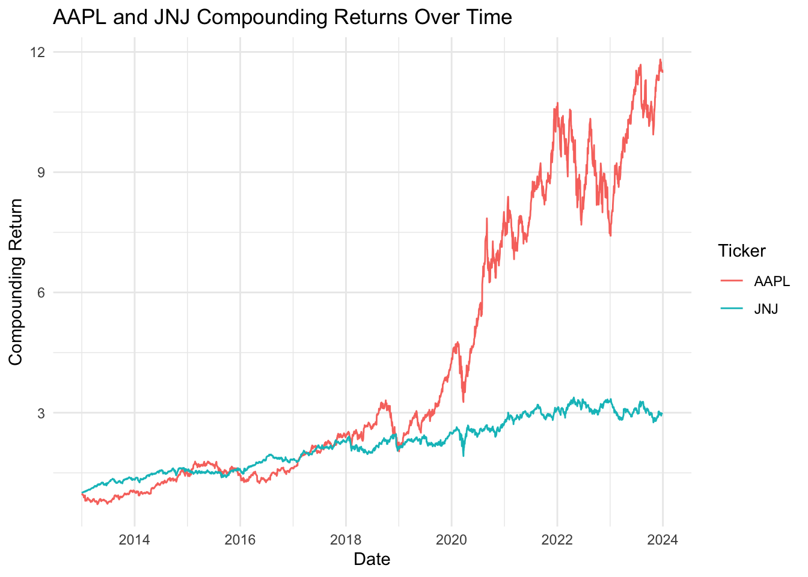
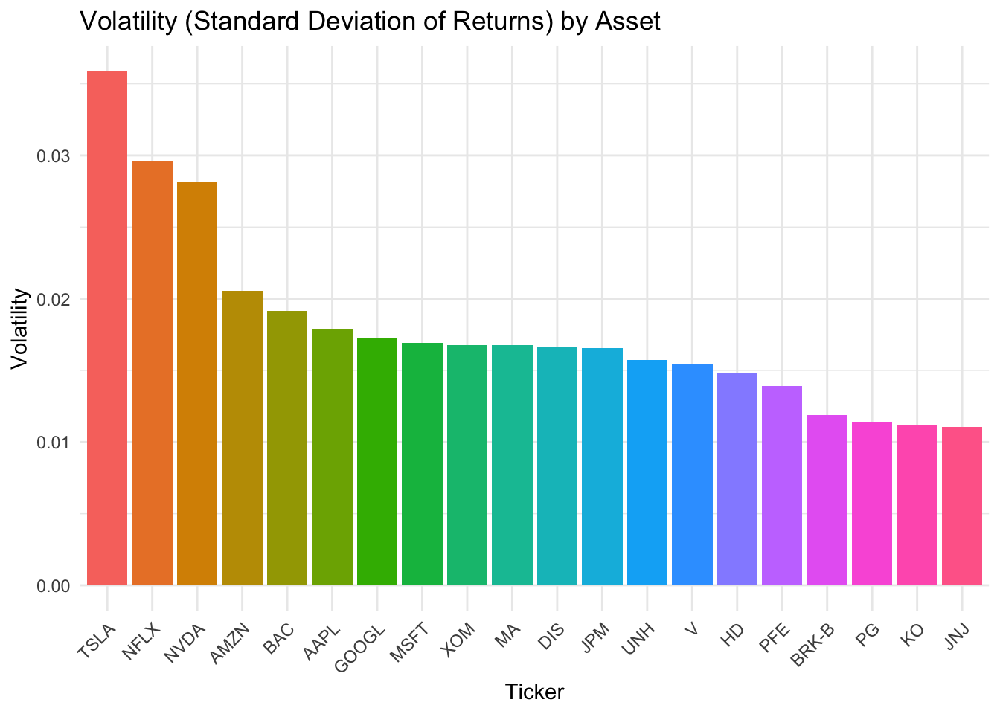

We picked some stock daily price data from sp500 index.
Code
# Load necessary librarieslibrary(quantmod)
Loading required package: xts
Loading required package: zoo
Attaching package: 'zoo'
The following objects are masked from 'package:base':
as.Date, as.Date.numeric
Loading required package: TTR
Registered S3 method overwritten by 'quantmod':
method from
as.zoo.data.frame zoo
Code
library(dplyr)
######################### Warning from 'xts' package ##########################
# #
# The dplyr lag() function breaks how base R's lag() function is supposed to #
# work, which breaks lag(my_xts). Calls to lag(my_xts) that you type or #
# source() into this session won't work correctly. #
# #
# Use stats::lag() to make sure you're not using dplyr::lag(), or you can add #
# conflictRules('dplyr', exclude = 'lag') to your .Rprofile to stop #
# dplyr from breaking base R's lag() function. #
# #
# Code in packages is not affected. It's protected by R's namespace mechanism #
# Set `options(xts.warn_dplyr_breaks_lag = FALSE)` to suppress this warning. #
# #
###############################################################################
Attaching package: 'dplyr'
The following objects are masked from 'package:xts':
first, last
The following objects are masked from 'package:stats':
filter, lag
The following objects are masked from 'package:base':
intersect, setdiff, setequal, union
Code
library(ggplot2)options(xts.warn_dplyr_breaks_lag =FALSE)# Define a function to fetch stock datafetch_stock_data <-function(tickers, start_date, end_date) {tryCatch({ stock_data <-lapply(tickers, function(ticker) {getSymbols(ticker, src ="yahoo", from = start_date, to = end_date, auto.assign =FALSE) })names(stock_data) <- tickersreturn(stock_data) }, error =function(e) {print(paste("Error fetching stock data:", e))return(NULL) })}# Define S&P 500 assets and tickersp500_assets <-c('AAPL', 'MSFT', 'GOOGL', 'AMZN', 'TSLA', 'NVDA', 'BRK-B', 'UNH', 'JNJ', 'V', 'PG', 'JPM', 'XOM', 'BAC', 'PFE', 'HD', 'MA', 'KO', 'DIS', 'NFLX')sp500_ticker <-"^GSPC"# Define date rangesstart_date <-'2013-01-01'end_date <-'2023-12-31'real_start_date <-'2024-01-01'real_end_date <-'2024-07-31'# Fetch stock data for the S&P 500 assetssp500_stock_data <-fetch_stock_data(sp500_assets, start_date, end_date)# Fetch S&P 500 index datasp500_index_data <-fetch_stock_data(c(sp500_ticker), start_date, end_date)
Code
# Load necessary librarieslibrary(dplyr)library(tidyr)library(quantmod)# Function to transform stock data into a tidy dataframecreate_neat_dataframe <-function(stock_data) {# Initialize an empty list to store dataframes all_stock_data <-list()for (ticker innames(stock_data)) {# Check if the stock data is validif (!is.null(stock_data[[ticker]])) {# Convert the xts object to a dataframe data <-data.frame(Date =index(stock_data[[ticker]]), coredata(stock_data[[ticker]])) data$Ticker <- ticker# Ensure consistent column namingcolnames(data) <-c("Date", "Open", "High", "Low", "Close", "Volume", "Adjusted", "Ticker")# Append to the list all_stock_data[[ticker]] <- data } }# Combine all dataframes into one combined_data <-bind_rows(all_stock_data)return(combined_data)}# Call the function and create a tidy dataframesp500_stock_df <-create_neat_dataframe(sp500_stock_data)
2.1 Description
The data for this project is sourced from Yahoo Finance, a widely used platform providing comprehensive historical market data for stocks and indices. The dataset includes daily records for multiple assets from the S&P 500 index, with columns such as Date, Open, High, Low, Close, Adjusted Close, and Volume. The primary focus is on the Close price, which will be used to calculate the daily log returns. Log returns are derived by taking the natural logarithm of the ratio of successive closing prices. These returns are central to the analysis as they standardize price changes, making the data scale-independent and additive over time, which simplifies statistical modeling and comparisons. The log return is preferred over simple return because it accounts for compounding effects and ensures symmetry between positive and negative percentage changes, making it ideal for financial data analysis.
Code
library(dplyr)library(ggplot2)# Define the tickers of interestselected_tickers <-c("AAPL", "TSLA", "NVDA", "JNJ", "JPM", "BRK-B")# Filter the dataframe for the selected tickerssp500_subset <- sp500_stock_df %>%filter(Ticker %in% selected_tickers)# Create the line plotggplot(sp500_subset, aes(x = Date, y = Adjusted, color = Ticker)) +geom_line() +labs(title ="Adjusted Close Prices Over Time",x ="Date",y ="Adjusted Close" ) +theme_minimal()
2.2 Return
Although an initial glance at raw price data may provide a sense of how various assets evolve over time, such plots are not ideal for comparative analysis. Each asset operates within its own price range, making direct comparisons misleading. To enable a fair evaluation across different assets, we employ measures such as daily returns and cumulative returns. A commonly used definition for the daily return is:
daily_returns <-function(data) {# Ensure the data is sorted by Date data <- data[order(data$Date), ]# Calculate daily returns using Adjusted prices# diff(data$Adjusted) gives P_t - P_{t-1}, and head(data$Adjusted, -1) gives P_{t-1} returns <-diff(data$Adjusted) /head(data$Adjusted, -1)# Create a new data frame with Date and Return result <-data.frame(Date = data$Date[-1], # Remove the first date since there's no previous day returnReturn = returns )return(result)}AAPL_price <-subset(sp500_stock_df, Ticker =="AAPL")AAPL_return <-daily_returns((AAPL_price))JNJ_price <-subset(sp500_stock_df, Ticker =="JNJ")JNJ_return <-daily_returns((JNJ_price))
2.2.1 Problems with visualizing return over time, and the histogram of return
mean_aapl <-mean(AAPL_return$Return, na.rm =TRUE)sd_aapl <-sd(AAPL_return$Return, na.rm =TRUE)# Plot for AAPLp1 <-ggplot(AAPL_return, aes(x = Return)) +geom_histogram(aes(y = ..density..), binwidth =0.01, fill ="steelblue", color ="white") +stat_function(fun = dnorm, args =list(mean = mean_aapl, sd = sd_aapl), color ="red", size =1) +labs(title ="AAPL Daily Returns Distribution",x ="Daily Return",y ="Density" ) +theme_minimal()# Calculate mean and sd for JNJ returnsmean_jnj <-mean(JNJ_return$Return, na.rm =TRUE)sd_jnj <-sd(JNJ_return$Return, na.rm =TRUE)# Plot for JNJp2 <-ggplot(JNJ_return, aes(x = Return)) +geom_histogram(aes(y = ..density..), binwidth =0.01, fill ="steelblue", color ="white") +stat_function(fun = dnorm, args =list(mean = mean_jnj, sd = sd_jnj), color ="red", size =1) +labs(title ="JNJ Daily Returns Distribution",x ="Daily Return",y ="Density" ) +theme_minimal()# Display both plots side-by-side using patchworkp1 + p2
Will investments on AAPL and JNJ perform similarly over time?
2.2.2 But when it compounds…
Code
AAPL_compounding_return <- AAPL_return %>%mutate(Compounding_Return =cumprod(1+ Return)) %>%mutate(Ticker ="AAPL")# Compute compounding returns for JNJJNJ_compounding_return <- JNJ_return %>%mutate(Compounding_Return =cumprod(1+ Return)) %>%mutate(Ticker ="JNJ")# Combine the twocombined_compounding_return <-bind_rows(AAPL_compounding_return, JNJ_compounding_return)# Plot both AAPL and JNJ on the same plotggplot(combined_compounding_return, aes(x = Date, y = Compounding_Return, color = Ticker)) +geom_line() +labs(title ="AAPL and JNJ Compounding Returns Over Time",x ="Date",y ="Compounding Return" ) +theme_minimal()

2.2.3 The Limitations of Simple Plots for Analyzing Returns
The daily return plot looks like noise, oscillating about 0, and we cannot make anything out of it. The histogram of returns has a mean close to 0 and resembles a normal distribution. However, when we look at the compounding return over time, it clearly goes up and is no longer messy. Why is it so hard to capture information out of the return? It’s due to market efficiency: if the returns were obviously informative, then something would be wrong, because no one in the market is foolish. If the return data showed anything other than noise, it would mean easy profit opportunities, which would quickly vanish as participants exploit them through arbitrage. Unless you engage in high-frequency trading, it’s impossible to take advantage of such fleeting signals. Thus, it is perfectly normal for the returns to look like noise, as it reflects an efficient market.
2.2.4 Is return informative?
But why does the cumulative return plot appear clearer? In the long term, there are still profits to be gained, influenced by industry trends or other large-scale factors. While these factors are hidden within the daily noise, they become evident when returns accumulate. Simply using basic plots like this, however, won’t help us uncover these subtleties. There are many important patterns hidden in the return data, that are not easy to visualize. We need more complex models to make the non visible pattern visible.
Before we enter the main part of this project, let’s first have an overview of the return data across different assets. To evaluate the data, we need 2 crucial statistics that are always the 2 most important figure of all models: mean and volatility. In financial data, it is often said “Higher the risk, higher the return”. Assets with higher mean of return always have a higher variance of return too. It means that it is very hard to find an asset, or create a portfolio that generates a consistent positive return, which is what everybody in the market is looking for.
Code
daily_returns_all <-function(data) {# Ensure the data is sorted by Ticker and Date data <- data[order(data$Ticker, data$Date), ]# Calculate daily returns using lagged Adjusted prices for each Ticker data <- data %>%group_by(Ticker) %>%# Group by Tickermutate(Return = (Adjusted -lag(Adjusted)) /# Calculate returnlag(Adjusted)) %>%ungroup() # Remove grouping# Select only Date, Ticker, and Return columns for the output result <- data %>%select(Date, Ticker, Return)return(result)}returns <-daily_returns_all(sp500_stock_df)mean_returns <-aggregate(Return ~ Ticker, data = returns, FUN = mean)mean_returns$Ticker <-reorder(mean_returns$Ticker, -mean_returns$Return)ggplot(mean_returns, aes(x = Ticker, y = Return, fill = Ticker)) +geom_bar(stat ="identity") +labs(title ="Mean Return by Asset",x ="Asset",y ="Mean Return" ) +theme_minimal() +theme(legend.position ="none", axis.text.x =element_text(angle =45, hjust =1))
Code
volatility <- returns %>%group_by(Ticker) %>%summarise(Volatility =sd(Return, na.rm =TRUE))# Reorder Ticker by Volatility (high to low) for sorting in the plotvolatility <- volatility %>%mutate(Ticker =reorder(Ticker, -Volatility))# Create a bar chart for volatilityggplot(volatility, aes(x = Ticker, y = Volatility, fill = Ticker)) +geom_bar(stat ="identity") +labs(title ="Volatility (Standard Deviation of Returns) by Asset",x ="Ticker",y ="Volatility" ) +theme_minimal() +theme(legend.position ="none", axis.text.x =element_text(angle =45, hjust =1))

2.3.1 Traditional Strategies
Our goal is to either find assets with higher mean, or asset with lower risk (volatility). Therefore, the 2 intuitive approaches to slect assets are:
At the same risk level, select assets with higher mean
At the same mean return level, select assets with lower volatility
The following object is masked from 'package:ggplot2':
last_plot
The following object is masked from 'package:stats':
filter
The following object is masked from 'package:graphics':
layout
Code
# Calculate mean and standard deviation (volatility) for each assetsummary_stats <- returns %>%group_by(Ticker) %>%summarise(Mean =mean(Return, na.rm =TRUE),Volatility =sd(Return, na.rm =TRUE) )# Create an interactive scatter plotfig <-plot_ly(data = summary_stats,x =~Volatility, y =~Mean, text =~Ticker, # Hover text displays the asset nametype ='scatter', mode ='markers',marker =list(size =10, color ='blue')) %>%layout(title ="Mean Return vs. Volatility",xaxis =list(title ="Volatility (Standard Deviation)"),yaxis =list(title ="Mean Return"),hovermode ="closest" )# Display the plotfig
By this logic, MSFT is a better choice than AAPL, NVDA is a better choice than NFLX. Because they have higher mean return and lower volatility.
However, all we have done so far is analyzing past data. In reality, the mean return is one of the hardest statistics to predict. Therefore, simply looking at the statistics of past data is not sufficient enough for us to make investment decisions. In order to dig more information about an asset by its return, we need some modeling work to do.